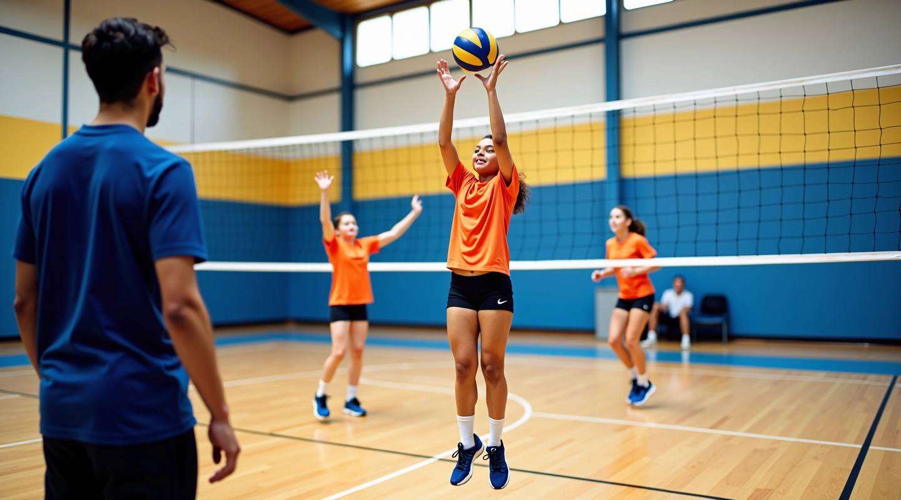

نجوم الشبكة للناشئين Ltd: بناء أبطال الكرة الطائرة
برنامج متخصص في تطوير مهارات الناشئين من سن 8 إلى 18 سنة. نحن نؤمن بأن كل ناشئ لديه القدرة على التفوق عندما يتلقى التوجيه الصحيح والتدريب المنتظم.

كيف بدأنا وما نفعله اليوم
نجوم الشبكة للناشئين Ltd تأسست عام 2020 برؤية واضحة: نحتاج إلى برنامج تدريبي حقيقي للناشئين. لا مجرد تمارين عشوائية — بل نظام منظم يعلم الأطفال أساسيات الكرة الطائرة بشكل صحيح.
اليوم، نحن نعمل مع أكثر من 200 ناشئ سنويًا في مركز شباب السويس. معظمهم بدأوا مبتدئين تماماً. الآن؟ يلعبون في فرق المدارس، يفهمون التكتيك الحقيقي، ويستمتعون باللعبة فعلاً. ما يميزنا ليس الوعود الكبيرة — إنه العمل اليومي المنتظم والمدربون الذين يعرفون ما يفعلونه.
التطوير البدني
نركز على القوة والمرونة واللياقة المحددة للكرة الطائرة. تمارين مخصصة لكل مجموعة عمرية.
الذكاء التكتيكي
لا يكفي أن تعرف الحركات. يجب أن تفهم متى تستخدمها. نعلم القراءة والاستجابة السريعة.
المهارات الأساسية
التمرير والإرسال والضربة القوية — كل مهارة تُدرس بتفاصيل دقيقة وتطبيق عملي.
أربع مسارات للنمو والتطور
كل مجموعة عمرية لها احتياجات مختلفة. برامجنا مصممة بناءً على مرحلة التطور البدني والذهني لكل ناشئ. الجلسات تتم ثلاث مرات أسبوعياً، 90 دقيقة لكل جلسة.
8 إلى 10 سنوات
التعريف باللعبة والمهارات الأساسية. التركيز على المرح والنشاط البدني العام. نعلمهم الوقفة الصحيحة والحركات الأساسية بدون ضغط.
11 إلى 13 سنة
تحسين المهارات التقنية وبناء اللياقة البدنية. نبدأ بفهم التكتيك البسيط والعمل الجماعي الفعلي. هذه المرحلة حرجة للتطور.
14 إلى 16 سنة
تطوير متقدم مع تركيز على الأداء والمباريات الفعلية. يتعلمون كيفية التعامل مع الضغط والتفكير السريع أثناء اللعب.
17 إلى 18 سنة
إعداد احترافي للناشئين الموهوبين. تدريب مكثف على مستويات عالية. نحضرهم للبطولات والفرق الجامعية.
كيفية عمل برنامجنا
نحن لا نعتقد بالطرق السريعة. التطور الحقيقي يأخذ وقتاً ومراراً وتكراراً منتظماً. هذا ما نفعله — نخلق بيئة حيث يمكن للناشئ أن يتعلم بثقة.
التقييم الأولي
نقيّم مستوى كل ناشئ — البدنية والمهارية والذهنية. لا نفترض شيئاً.
خطة مخصصة
بناءً على التقييم، نضع مسار تدريب يناسب احتياجات هذا الناشئ بالذات.
التدريب المنتظم
جلسات منتظمة ثلاث مرات أسبوعياً مع مدربين معتمدين ولديهم خبرة حقيقية.
المراقبة والتطوير
نتابع التقدم بشكل مستمر ونعدل الخطة حسب الحاجة. التقييمات الدورية ضرورية.
المشاركة في المباريات
عندما يكون الناشئ مستعداً، يشارك في مباريات فعلية مع فرق أخرى.
التقييم والتحسين
من خلال المباريات، نتعلم أين نحتاج للتحسن ونستمر في التطوير.
ما يدفعنا يومياً
نجوم الشبكة للناشئين Ltd مبنية على أساسيات بسيطة. الصدق في التدريب، الاحترام للناشئ، والالتزام بالتفاني. ليس لدينا تسويق براق — فقط نتائج حقيقية.
الشغف الحقيقي
نحن نحب الكرة الطائرة. هذا ليس عمل روتيني لنا — إنه شيء نؤمن به حقاً.
الأمان والثقة
آباء الناشئين يثقون بنا لأننا نضع سلامتهم أولاً دائماً في كل تدريب.
الابتكار والتحسن
نتعلم من كل موسم. نحاول طرق جديدة. نبحث عن أفضل الممارسات العالمية.
العمل الجماعي
الناشئون يتعلمون أن النجاح يأتي من التعاون وليس من النجاح الفردي فقط.
النمو المستمر
لا نتوقف أبداً عن التعلم. الناشئون والمدربون والبرنامج — الكل يتطور.
التميز بالتفاني
الجودة تأتي من التفاني. كل جلسة تدريب تُخطط بعناية وتُنفذ باحترافية.
معلومات مهمة
المعلومات المقدمة على هذا الموقع مخصصة لأغراض تعليمية وإعلامية فقط. البرنامج المقدم من نجوم الشبكة للناشئين Ltd يعتمد على مبادئ التدريب الرياضي الموثوقة والخبرة العملية. ومع ذلك، فإن نتائج التطور البدني والمهاري تعتمد على عوامل عديدة منها الالتزام الشخصي، والخبرة السابقة، والتطبيق العملي المنتظم. كل ناشئ له قدراته وسرعة تطوره الخاصة. نشجع جميع الآباء والناشئين على توقع رحلة تطور طويلة الأجل وليس نتائج فورية. الأداء الرياضي يتطلب صبراً والتزاماً مستمراً.